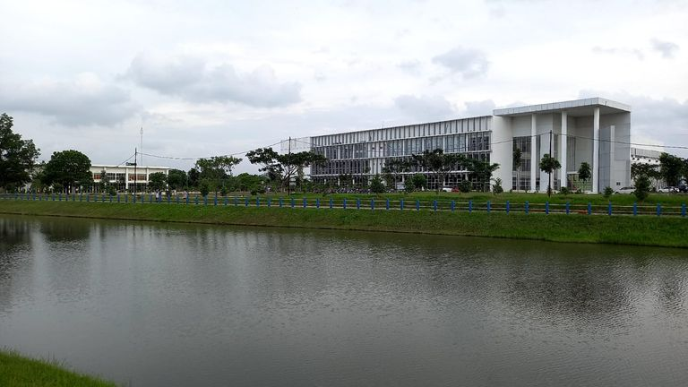
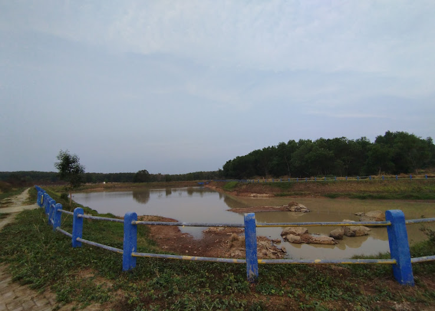

Tentang Embung

Embung merupakan salah satu kawasan yang berada di lingkungan Institut Teknologi Sumatera (ITERA). Embung ini merupakan wilayah terbuka di lingkungan kampus yanng memiliki fungsi sebagai tempat penampungan air. Selain itu embung ITERA sering digunakan untuk tempat untuk bersantai, berjalan dan beraktivitas olahraga outdoor bagi para pengujung ataupun civitas akademik ITERA
Daftar Embung
| no | Gambar | Nama | Luas |
|---|---|---|---|
| 1 |
|
Embung A | 3,4 hektar |
| 2 |
|
Embung B | 1,146 hektar |
| 3 |
|
Embung C | 1,052 hektar |
| 4 |
|
Embung D | 0,844 hektar |
| 5 |
|
Embung E | 9,562 hektar |
| 6 |
 |
Embung F | 0,56 hektare |
| 7 |
|
Embung Sumatera | 3 hektar |